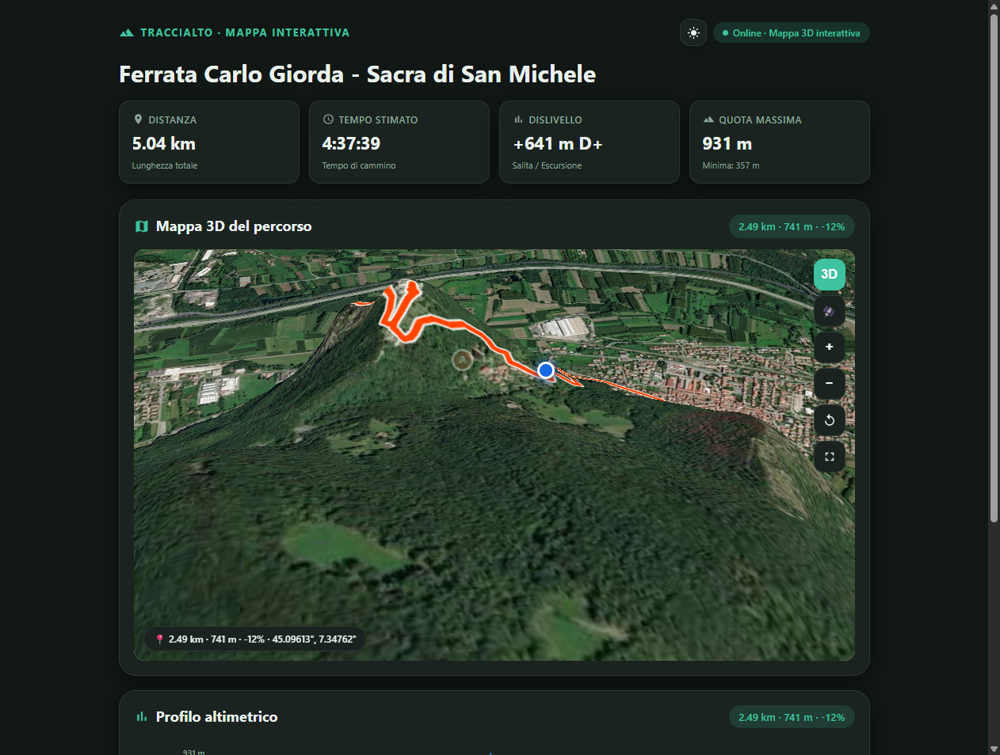
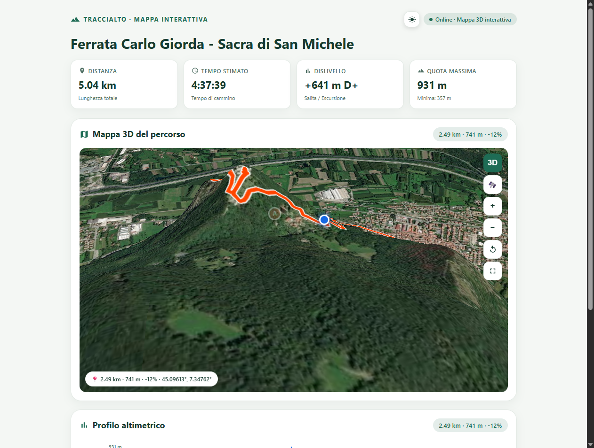
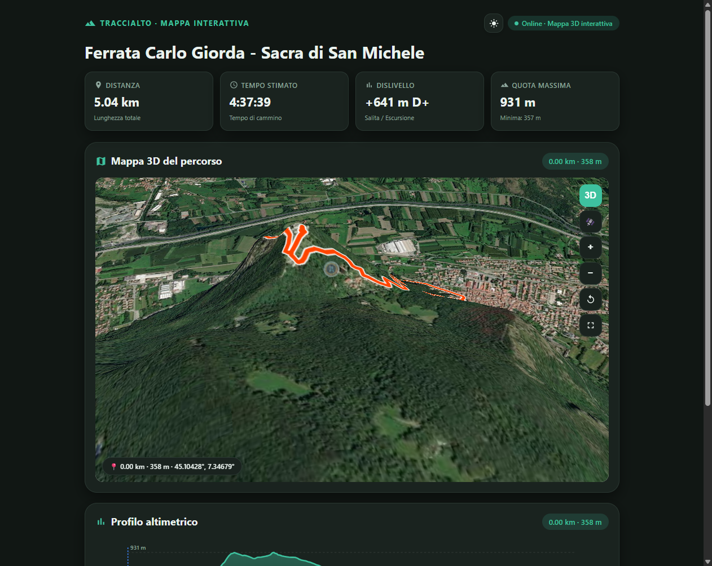

La tua traccia in quota. Mappe offline, rilievo 3D e rispetto totale della privacy.
Crea, importa e segui itinerari con istruzioni chiare, profili altimetrici e rilievo in 3D. Tutti i tuoi dati restano esclusivamente sul tuo telefono.
Disponibile su Google PlayProgettata per chi vive la montagna
Un'interfaccia chiara, leggibile sotto la luce diretta del sole e ottimizzata per i sentieri.

Mappa 3D Satellitare
Orografia in rilievo e traccia escursionistica con quote reali

Topografia Chiara
Curve di livello, tappe intermedie e sentieri CAI visibili

Rilievo Panoramico
Visuale a volo d'uccello sui versanti montani e canaloni
Cartografia Offline
Scarica tessere cartografiche e segui sentieri, curve di livello e riferimenti topografici anche in assenza di segnale telefonico.
Orografia & Rilievo 3D
Esplora il terreno montano in 3D con modelli di elevazione digitali precisi (DEM) per comprendere pendenze, valli e crinali.
Import & Export GPX e KML
Carica qualsiasi traccia GPX o KML in un istante. Pianifica tappe intermedie, consulta distanze reali e ricevi indicazioni alle svolte.
Adesivi e Condivisione Grafica
Genera adesivi trasparenti e schede di viaggio con traccia, altimetria, dislivello e tempi da condividere sulle tue storie e app preferite.
Traguardi Vocali e AMOLED
Ricevi avvisi vocali sui metri di dislivello scalati per non estrarre il telefono, e risparmia batteria con la modalità AMOLED a basso consumo.
SOS & Punti Utili
Punti acqua, rifugi, ripari e coordinate GPS immediate a portata di mano. Segnale luminoso ottico SOS integrato per le emergenze.
Privato per Definizione
Nessun account obbligatorio, nessuna profilazione commerciale e zero annunci pubblicitari. Tutti i tuoi itinerari, le tue registrazioni e i tuoi diari rimangono memorizzati esclusivamente nello spazio protetto del tuo dispositivo.